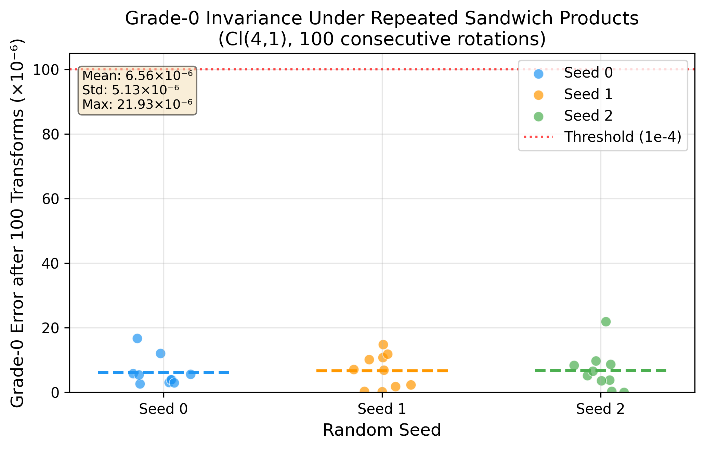
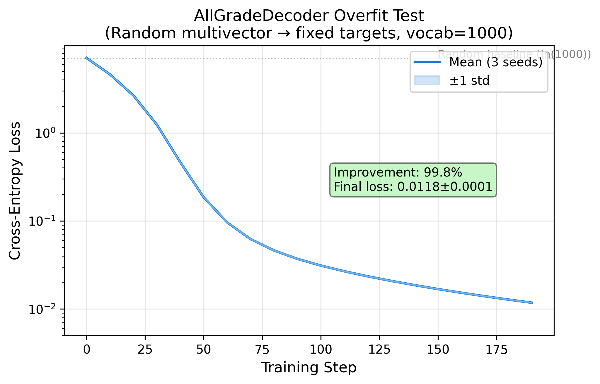
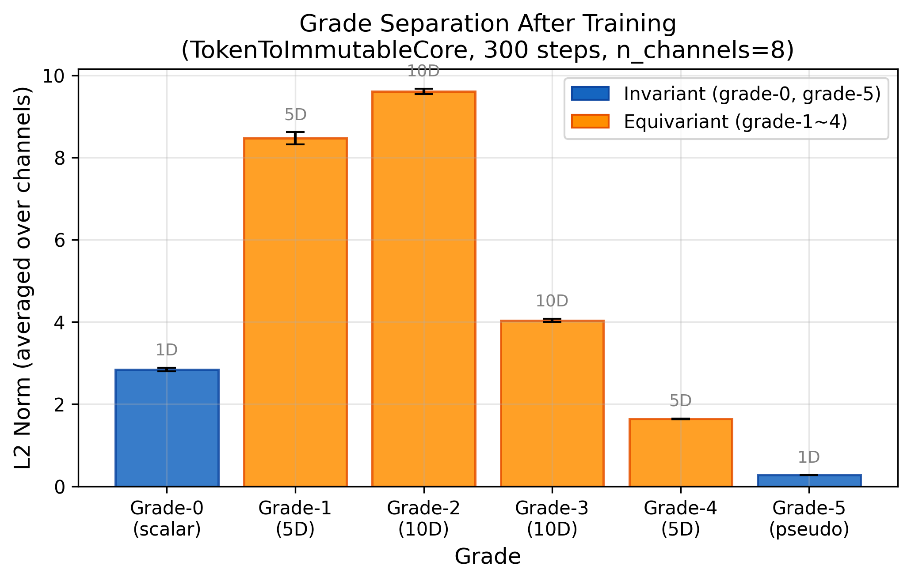
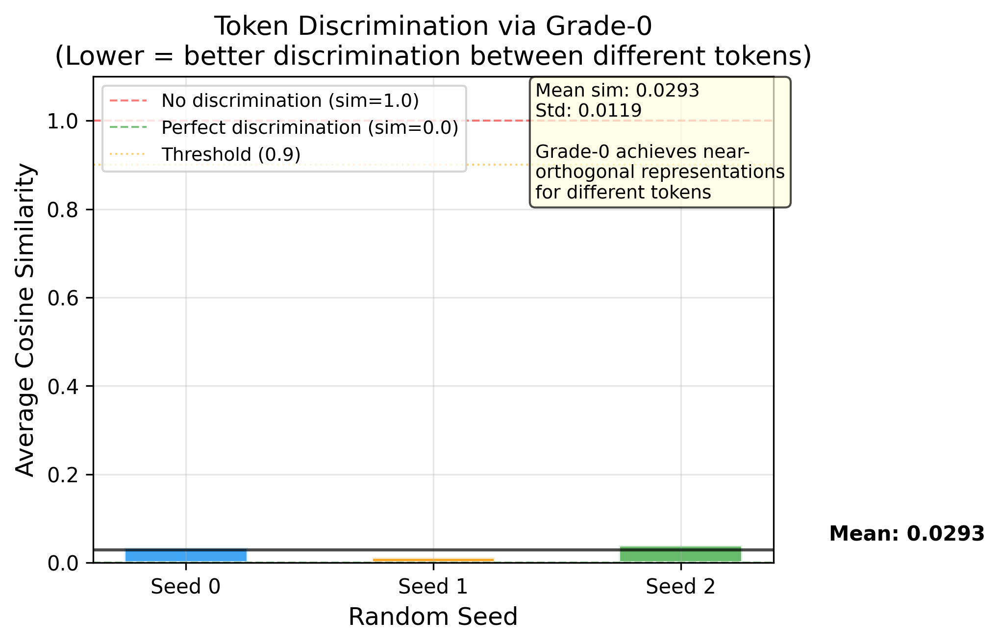

Every current language model compresses all semantics into a single flat vector — and that vector gets overwritten layer by layer. There is no mechanism to distinguish what a token originally meant from what inference added to it. The consequences are structural, not incidental.
DNA simultaneously achieves three things that tokens cannot: permanent genome preservation, dynamic epigenetic read/write, and active erasure of outdated marks. We map each mechanism directly to a mathematical structure.
The critical property: in Cl(4,1) conformal geometric algebra, the grade-0 scalar is algebraically invariant under the sandwich product RMR̃ for any rotor R. This is not an approximation — it is a theorem. We use this structure to separate what a token is from what inference knows about it.




| Phase | Goal | Status |
|---|---|---|
| Phase 1 | Mathematical verification of Cl(4,1) properties (invariance, equivariance, Eraser) | ✅ Complete |
| Phase 2 | Encoding-decoding pipeline: TokenToIC → BIICLayer → AllGradeDecoder | ✅ Complete |
| Phase 3 | 6-group controlled experiment — H1: geometry vs. orthogonality · H2: equivariant structure vs. dimensionality · H3: Eraser on long sequences | 🔄 Running |
| Phase 4 | MVP language model: SlowFastBIIC + DualCodebook, WikiText-103, no residual / no KV cache | 📋 Planned |
BIIC is not a new transformer variant. It replaces the information carrier itself — the token — before any transformer-style processing occurs.
| Approach | What they replace | Input/output | Invariance guarantee |
|---|---|---|---|
| GATr (2023) | Attention mechanism | Still tokens | E(3) equivariance only |
| Versor (2026) | Internal computation | Still tokens | SE(3) equivariance only |
| FoldToken (2024) | Protein structure tokens | Domain-specific | SE(3) invariant encoder |
| BIIC (ours) | The information carrier itself | Multivector (invariant + equivariant) | Grade-0 invariant by theorem · Eraser preserves invariant core exactly |
pip install torch numpy scipy matplotlib # Phase 1: Mathematical verification (CPU is enough) python tests/test_phase1.py # Phase 2: Pipeline verification (CPU, ~10 min) python tests/test_decoder_basic.py python tests/test_encoder.py python tests/test_full_pipeline.py
BIIC/ ├── src/ │ ├── clifford_cl41.py # Cl(4,1) Golden Reference (never delete) │ ├── rotor_utils.py # Rotors & sandwich products │ ├── eraser_ops.py # GradeAwareEraser │ ├── token_to_ic.py # TokenToImmutableCore encoder │ ├── all_grade_decoder.py # DualCodebook decoder │ ├── mutable_state.py # BIICLayer (Writer + Eraser) │ └── biic_loss.py # Annealed auxiliary losses ├── tests/ # 10+11 validation tests ├── results/ # JSON data, 3 seeds each phase ├── figures/ # Paper figures (fig1–fig4) └── LICENSE
Brehmer et al. (2023). Geometric Algebra Transformer (GATr). NeurIPS 2023.
Huy & Hirst (2026). Versor: A Geometric Sequence Architecture.
Ji (2026). CliffordNet: All You Need is Geometric Algebra.
Anonymous (2026). Toward a Functional Geometric Algebra for NLP.
Dasgupta et al. (2026). Invariant Features in Language Models.
Wu & Zhang (2017). TET-mediated active DNA demethylation. Nature Reviews Genetics.
Interested in collaborating on the paper, contributing experiments, or exploring new information-theoretic paradigms? Reach out.
Business Source License 1.1 — free for non-production and research use. See LICENSE for details.
当前所有语言模型都把语义压进一个扁平向量，每经过一层推理就被覆盖一次。没有任何机制能区分这个 token 原本是什么意思和推理过程给它附加了什么信息。这是结构性缺陷，不是可以调参解决的问题。
DNA同时做到了三件 token 做不到的事：永久保存基因组、动态读写表观标记、主动擦除过时标记。我们把每个机制直接映射到一个数学结构。
关键性质：在 Cl(4,1) 保形几何代数中，grade-0 标量在旋转子 sandwich 积 RMR̃ 下代数严格不变。这不是近似——是定理。我们用这个结构把token 是什么和推理知道什么物理隔离。
| 阶段 | 目标 | 状态 |
|---|---|---|
| Phase 1 | Cl(4,1) 数学性质验证（不变性、等变性、Eraser） | ✅ 完成 |
| Phase 2 | 编解码链路：TokenToIC → BIICLayer → AllGradeDecoder | ✅ 完成 |
| Phase 3 | 6组对照实验 · H1：几何结构 vs 正交约束 · H2：等变结构 vs 维度 · H3：Eraser 在长序列上的效果 | 🔄 运行中 |
| Phase 4 | MVP 语言模型：SlowFastBIIC + DualCodebook，WikiText-103，无残差 / 无 KV Cache | 📋 计划中 |
BIIC 不是新的 transformer 变体。它在任何 transformer 式处理发生之前，就替换了信息承载物本身——token。
| 方法 | 替换了什么 | 输入/输出 | 不变性保证 |
|---|---|---|---|
| GATr (2023) | 注意力机制 | 仍然是 token | 仅 E(3) 等变 |
| Versor (2026) | 内部计算 | 仍然是 token | 仅 SE(3) 等变 |
| FoldToken (2024) | 蛋白质结构 token | 领域特定 | SE(3) 不变编码器 |
| BIIC（我们） | 信息承载物本身 | 多向量（不变 + 等变） | Grade-0 由定理保证不变 · Eraser 精确保持不变核 |
pip install torch numpy scipy matplotlib # Phase 1：数学验证（CPU 即可） python tests/test_phase1.py # Phase 2：链路验证（CPU，约10分钟） python tests/test_decoder_basic.py python tests/test_encoder.py python tests/test_full_pipeline.py
Brehmer et al. (2023). Geometric Algebra Transformer (GATr). NeurIPS 2023.
Huy & Hirst (2026). Versor: A Geometric Sequence Architecture.
Ji (2026). CliffordNet: All You Need is Geometric Algebra.
Anonymous (2026). Toward a Functional Geometric Algebra for NLP.
Dasgupta et al. (2026). Invariant Features in Language Models.
Wu & Zhang (2017). TET 介导的主动 DNA 去甲基化. Nature Reviews Genetics.
对这个方向感兴趣、愿意一起写论文、贡献实验或探索新范式的朋友，欢迎联系。
Business Source License 1.1——研究和非生产使用免费。详见 LICENSE。